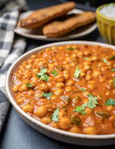

Tikka Masala

Description
A delicious blend of chickpeas, tomatoes and spices.
Ingredients
- 2-15oz cans of chickpeas, drained
- 2-15oz cans of chopped tomatoes(I use petite diced)
- 1 cup of coconut milk
- 6 cloves of garlic, peeled and chopped
- 4 tsp Garam Masala, plus or minus to taste
- salt and pepper to taste
Instructions
- Add all ingredients to large pot. Season with salt and pepper. Cook over medium heat until boiling. Let simmer for 10 minutes. Dish will thicken the longer it simmers
- Serve with Naan bread and plain yogurt.